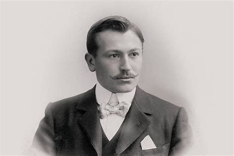

Hans Wilsdorf, founder of the company, instilled a notion of perpetual excellence, leading to major watchmaking innovations,
such as the Oyster, the first waterproof wristwatch and the Perpetual rotor self-winding mechanism.
The brand designs, develops and produces the majority of its watch components in-house.
Rolex also supports the arts and culture, sport, exploration, and those who are devising solutions to preserve the planet.
It is a committed and responsible company whose products are made to last.
In its quest for excellence, Rolex strives each day to improve not only its watches but also its environmental performance and its impact on society.
Rolex’s history is closely linked to that of its founder Hans Wilsdorf.
Hans Wilsdorf was a visionary who foresaw a century of change. Convinced that water resistance would turn the wristwatch into a must-have for everyone, he launched the Oyster in 1926.
Aware of the importance of records and discoveries,
he tested his watches under extreme conditions in the company of sportspeople and explorers of the 20th century.
Rolex’s innovations have indelibly marked the history of global watchmaking and bear witness to its founder’s unending quest for excellence.